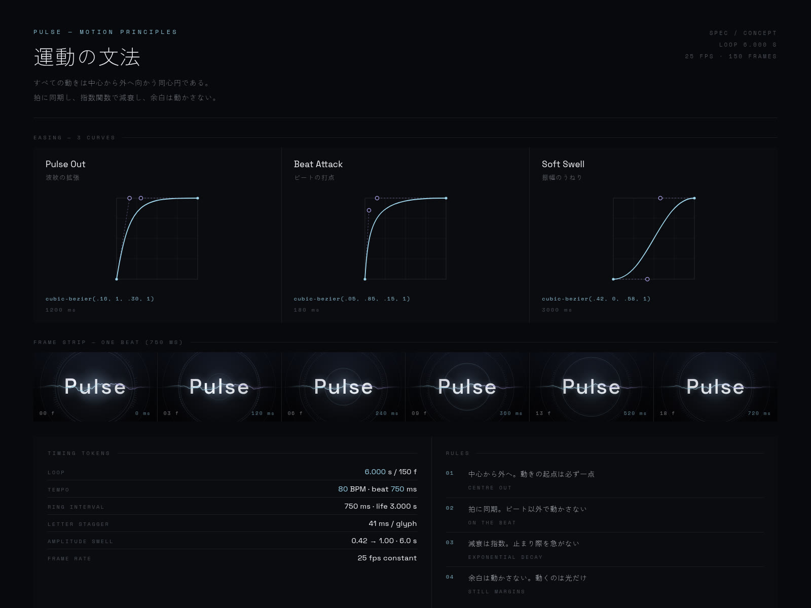
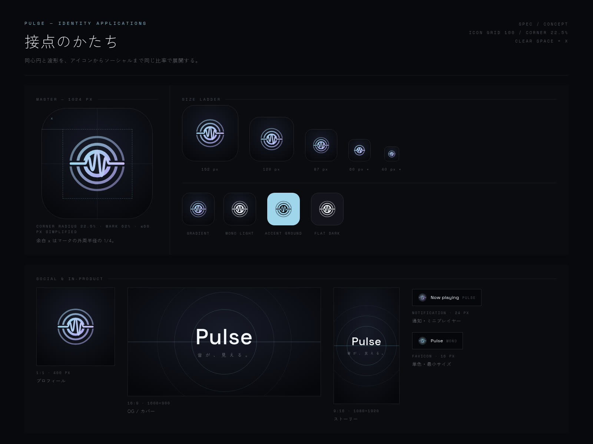
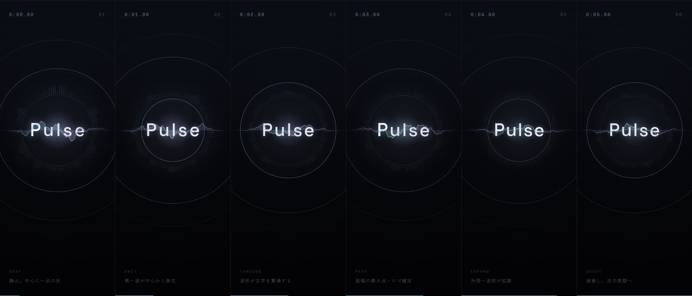

音楽ストリーミングサービスのブランドモーション。中心から外へ広がる同心円をひとつの運動言語に定め、ワードマーク・アイコン・ソーシャルまで同じ拍で脈打たせた。
架空のプロジェクトです。実在のクライアント・実績ではありません。
ブランドの核に据えたのは同心円のモーションシステム。水面に落ちた一滴のように、すべての動きは画面中心の一点から外へ広がる。止まっている状態でも、次に何が起きるかが分かる形にした。
ワードマークは波形が文字を貫通する。字面の内側だけを波形が明るく走り、拍ごとに一文字ずつ膨らむ。「音が、見える。」という一文を、説明ではなくロゴの挙動そのもので示している。


ループ長は6.000秒・25fps・150フレームちょうど。テンポは80BPMで、1拍は750ms。波紋は1拍ごとに1本発生し、寿命3秒で消えるので常に4本が同時に走る。周期がぴったり割り切れるため、継ぎ目のない無限ループになる。
イージングは三本だけに限定した。波紋の拡張に cubic-bezier(.16, 1, .30, 1)、打点に cubic-bezier(.05, .85, .15, 1)、振幅のうねりに cubic-bezier(.42, 0, .58, 1)。減衰は必ず指数関数で、止まり際を急がない。
アイコンは同心円と波形をそのまま落とし込み、60px以下では外周リングを一本落とした小サイズ用の簡略版に切り替える。単色版・アクセント地・フラット地の3変種と、プロフィール／カバー／ストーリーのソーシャルタイル、通知バッジまでを同じ比率で展開した。

本ページは構想（Spec）です。実在するクライアントの業務ではなく、掲載している動画・画像はすべてこの案のために制作したものです。ループ動画は Canvas で描いた実物で、モックアップではありません。
効果・売上・受賞・メディア掲載といった実績の数値は一切掲載していません。示しているのはデザインの意図と、実際に作ったアウトプットの範囲だけです。